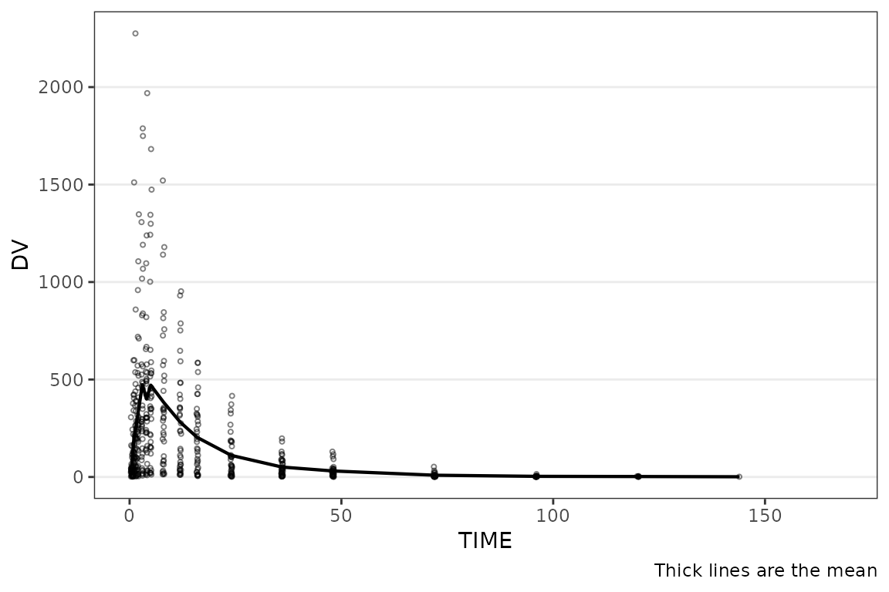
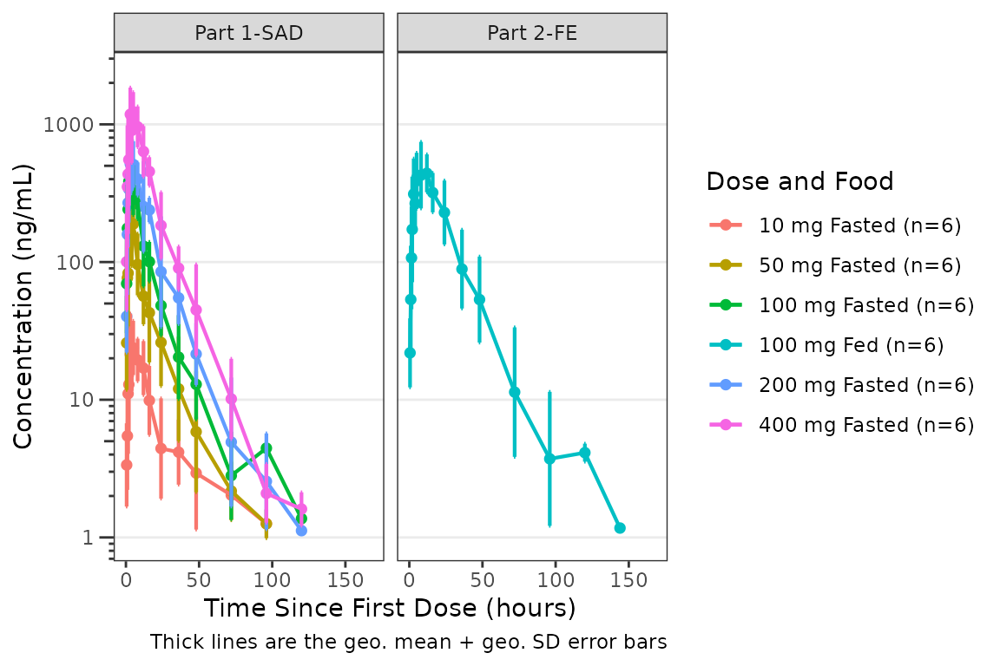
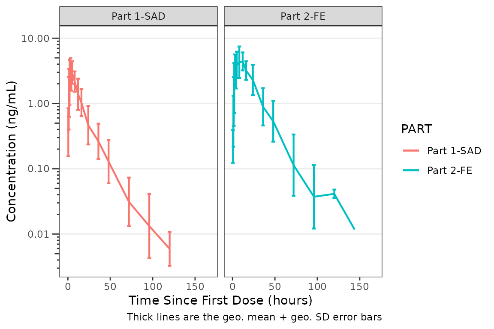
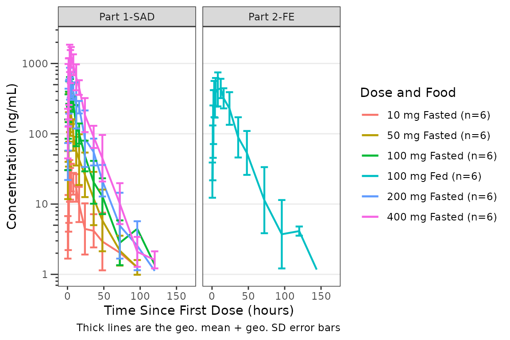
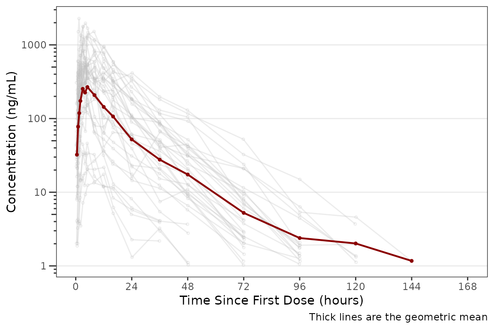
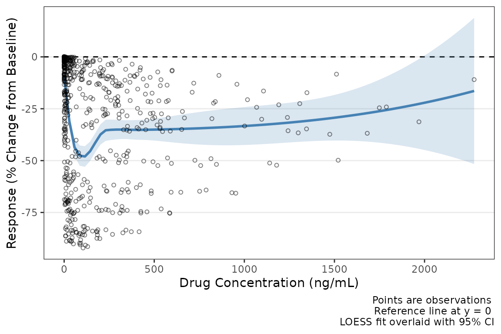
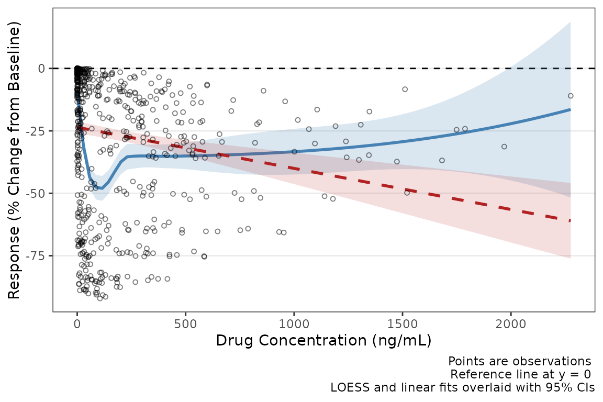
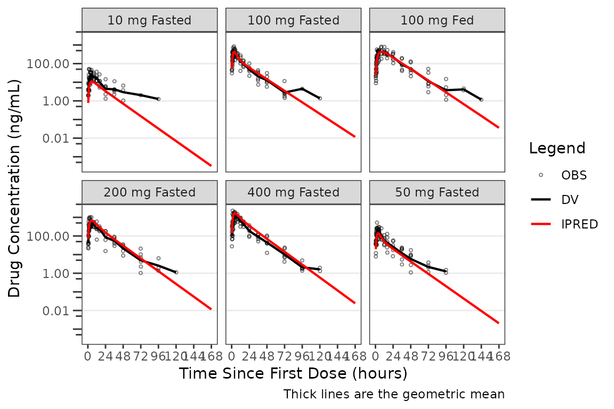
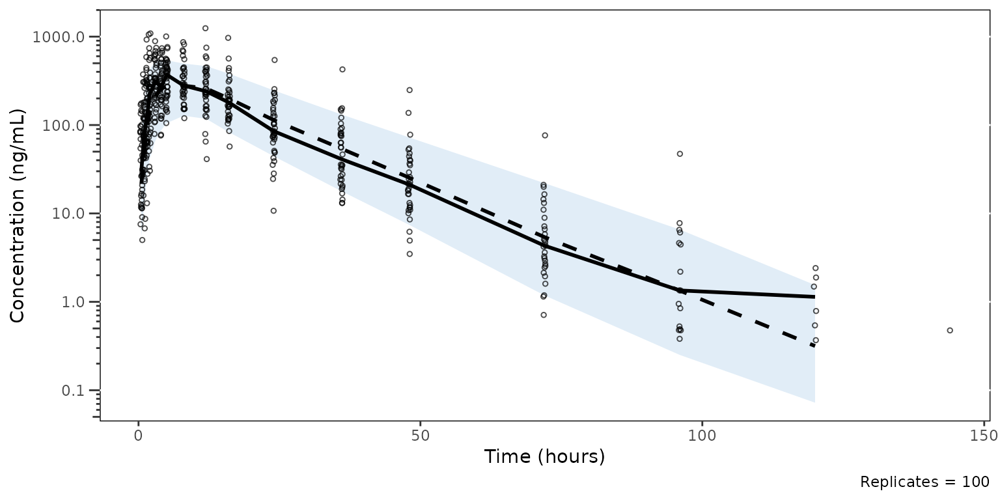

This vignette will demonstrate pmxhelpr functions for
viewing and modifying plot themes and theme elements for all package
plotting functions, which includes plot_dvtime(),
plot_dvconc(), plot_doseprop(),
plot_gof(), and plot_vpc_cont(). This vignette
will introduce the theory and naming conventions behind the theme
factory functions for each plot, as well as individual plot element
constructors.
options(scipen = 999, rmarkdown.html_vignette.check_title = FALSE)
library(pmxhelpr)
library(dplyr, warn.conflicts = FALSE)
library(ggplot2, warn.conflicts = FALSE)
library(Hmisc, warn.conflicts = FALSE)
library(patchwork, warn.conflicts = FALSE)Data and Model Objects
The example datasets used in this vignette are based around the
data_sad dataset internal to pmxhelpr. This
dataset is based on a single ascending dose (SAD) study of an orally
administered drug product with a parallel group food effect (FE) cohort
and is formatted in a analysis-ready format for non-linear mixed effects
(NLME) Population PK or PK/PD modeling. data_sad_pkfit is a
modified version of data_sad, which includes additional PK
model predictions appended.
This vignette will assume familiarity with these internal datasets from other vignettes. These elements will not be reviewed in detail in this vignette, which is focused only on theme aesthetic controls across plotting functions.
data_sad
Dataset definitions can be viewed by calling
?data_sad.
Let’s define some variables that may be useful in plotting and filter down to PK or PD relevant records.
data <- data_sad %>%
mutate(`Food Status` = ifelse(FOOD == 0, "Fasted", "Fed"),
DoseFood = paste(DOSE, "mg", `Food Status`)) %>%
mutate(`Dose and Food` = var_addn(DoseFood, ID))
gof_data <- data_sad_pkfit %>%
mutate(`Food Status` = ifelse(FOOD == 0, "Fasted", "Fed"),
DoseFood = paste(DOSE, "mg", `Food Status`)) %>%
mutate(`Dose and Food` = var_addn(DoseFood, ID))
data_pk <- filter(data, CMT %in% c(1,2))
data_pd <- filter(data, CMT %in% c(1,3))
data_pkfit <- filter(gof_data, CMT %in% c(1,2))
data_nca <- filter(data_sad_nca, PART == "Part 1-SAD")
doseprop_data_nca <- df_doseprop(data_nca, metrics = c("aucinf.obs", "cmax"), metric_name_var = "PPTESTCD")An example PK model (pkmodel) in mrgmod
format is provided in the internal package library. This is loaded using
the helper function model_mread_load(), which wraps
mrgsolve::mread.
model <- model_mread_load("pkmodel")
#> Building pkmodel_cpp ... done.Overview
Every pmxhelpr plot function
(plot_dvtime(), plot_dvconc(),
plot_doseprop(), plot_gof(),
plot_vpc_cont()) accepts a theme argument that
controls the appearance of points, lines, ribbons, error bars, and
reference lines. The theme system has two layers:
Element constructors (
pmx_point(),pmx_line(), etc.) define what to style. Each constructor maps directly to aggplot2geom and only accepts aesthetics relevant to that geom.Theme factories (
plot_dvtime_theme(),plot_gof_theme(), etc.) define where those elements go. Each factory returns a named list of default element objects, one per visual layer in the plot. User overrides are merged field-by-field into these defaults.
This design means every plot function uses the same workflow. The defaults can be viewed by calling the theme factory function corresponding to the plot with no arguments, which produces default plot aesthetics.
# View defaults
plot_dvtime_theme()
#> <plot_dvtime_theme>
#> obs_point <pmx_point>: shape = 1, size = 0.75, alpha = 0.5
#> obs_line <pmx_line>: linewidth = 0.5, linetype = 1, alpha = 0.5
#> cent_point <pmx_point>: shape = 16, size = 1.25, alpha = 0
#> cent_line <pmx_line>: linewidth = 0.75, linetype = 1, alpha = 1
#> cent_errorbar <pmx_errorbar>: linewidth = 0.75, linetype = 1, alpha = 1, width = NULL
#> ref_line <pmx_line>: linewidth = 0.5, linetype = 2, alpha = 1
#> loq_line <pmx_line>: linewidth = 0.5, linetype = 2, alpha = 1
plot_dvtime(data_pk, dv_var = ODV, theme = plot_dvtime_theme())
The workflow to update themes is consistent across plotting functions.
# Override specific fields — unspecified fields keep their defaults
new_dvtime_theme <- plot_dvtime_theme(cent_line = pmx_line(linetype = "dashed"))
plot_dvtime(data_pk, dv_var = ODV, theme = new_dvtime_theme)Element Constructors
Each constructor creates a named list with an S3 class tag.
# Full element with all fields
pmx_point(shape = 16, size = 1.25, alpha = 1, color = "blue")
#> <pmx_point>
#> shape = 16, size = 1.25, alpha = 1, color = blueOnly non-NULL fields are stored, so partial overrides are easy to define by only passing the elements to override. When a user-supplied element is merged into a default, each specified field replaces the corresponding default. Unspecified fields are preserved. This occurs without user input in the plot theme constructor factory functions.
# Partial override — only the fields you want to change
pmx_point(size = 2)
#> <pmx_point>
#> size = 2The available element constructors are as follows:
-
pmx_point()-
ggplotlayers:geom_point,stat_summary - function fields:
shape,size,alpha,color
-
-
pmx_line()-
ggplotlayers:geom_line,geom_hline - function fields:
shape,size,alpha,color
-
-
pmx_ribbon()-
ggplotlayers:geom_ribbon - function fields:
fill,alpha,color,linetype,linewidth
-
-
pmx_errorbar()-
ggplotlayers:geom_errorbar, - function fields:
linewidth,linetype,alpha,width
-
-
pmx_trend()-
ggplotlayers:geom_smooth, - function fields:
linewidth,linetype,color,se_color,se_alpha
-
-
pmx_style()- Convenience shortcut function
- function fields:
alpha,color
Theme Factories
Naming Convention
Theme keys follow a role_element pattern where the
role identifies the data layer and the
element identifies the geom type:
-
obs_point— observed data, point geom -
cent_line— central tendency, line geom -
ref_line— reference line, line geom
When a role uses only one geom type, the key uses the role plus the
element suffix (e.g., ref_line, loq_line).
Shared Elements Across Factories
Several element roles appear across multiple theme factories:
- Element Key:
ref_line- Element Constructor:
pmx_line - Used in:
plot_dvtime_theme,plot_gof_theme,plot_dvconc_theme
- Element Constructor:
- Element Key:
loq_line- Element Constructor:
pmx_line - Used in:
plot_dvtime_theme,plot_gof_theme,plot_vpc_theme
- Element Constructor:
- Element Key:
cent_errorbar- Element Constructor:
pmx_errorbar - Used in:
plot_dvtime_theme,plot_gof_theme
- Element Constructor:
- Element Key:
obs_point- Element Constructor:
pmx_point - Used in:
plot_dvtime_theme,plot_gof_theme,plot_dvconc_theme
- Element Constructor:
The same constructors and merge logic apply everywhere, so learning the system once covers all plot types.
Role-Level Shortcuts with pmx_style()
When a role has both _point and _line
elements (e.g., obs_point and obs_line), you
can set shared aesthetics on both at once using
pmx_style(). This is passed to a shared key for
observations (obs).
# These two calls produce the same result:
plot_dvtime_theme(obs_point = pmx_point(alpha = 0.3),
obs_line = pmx_line(alpha = 0.3))
#> <plot_dvtime_theme>
#> obs_point <pmx_point>: shape = 1, size = 0.75, alpha = 0.3
#> obs_line <pmx_line>: linewidth = 0.5, linetype = 1, alpha = 0.3
#> cent_point <pmx_point>: shape = 16, size = 1.25, alpha = 0
#> cent_line <pmx_line>: linewidth = 0.75, linetype = 1, alpha = 1
#> cent_errorbar <pmx_errorbar>: linewidth = 0.75, linetype = 1, alpha = 1, width = NULL
#> ref_line <pmx_line>: linewidth = 0.5, linetype = 2, alpha = 1
#> loq_line <pmx_line>: linewidth = 0.5, linetype = 2, alpha = 1
plot_dvtime_theme(obs = pmx_style(alpha = 0.3))
#> <plot_dvtime_theme>
#> obs_point <pmx_point>: shape = 1, size = 0.75, alpha = 0.3
#> obs_line <pmx_line>: linewidth = 0.5, linetype = 1, alpha = 0.3
#> cent_point <pmx_point>: shape = 16, size = 1.25, alpha = 0
#> cent_line <pmx_line>: linewidth = 0.75, linetype = 1, alpha = 1
#> cent_errorbar <pmx_errorbar>: linewidth = 0.75, linetype = 1, alpha = 1, width = NULL
#> ref_line <pmx_line>: linewidth = 0.5, linetype = 2, alpha = 1
#> loq_line <pmx_line>: linewidth = 0.5, linetype = 2, alpha = 1pmx_style() accepts color and
alpha — the two fields shared by both
pmx_point() and pmx_line().
When both a style shortcut and an explicit element override are provided, the style is applied first, then the element override wins for any conflicting fields:
# Style sets alpha on both point and line,
# then the explicit override changes just the point size
theme <- plot_dvtime_theme(
obs = pmx_style(alpha = 0.3),
obs_point = pmx_point(size = 3)
)
theme$obs_point # alpha = 0.3, size = 3
#> <pmx_point>
#> shape = 1, size = 3, alpha = 0.3
theme$obs_line # alpha = 0.3, linewidth = 0.5 (default)
#> <pmx_line>
#> linewidth = 0.5, linetype = 1, alpha = 0.3Defaults in Theme Factories
Defaults for plot_dvtime() in
plot_dvtime_theme()
plot_dvtime_theme()
#> <plot_dvtime_theme>
#> obs_point <pmx_point>: shape = 1, size = 0.75, alpha = 0.5
#> obs_line <pmx_line>: linewidth = 0.5, linetype = 1, alpha = 0.5
#> cent_point <pmx_point>: shape = 16, size = 1.25, alpha = 0
#> cent_line <pmx_line>: linewidth = 0.75, linetype = 1, alpha = 1
#> cent_errorbar <pmx_errorbar>: linewidth = 0.75, linetype = 1, alpha = 1, width = NULL
#> ref_line <pmx_line>: linewidth = 0.5, linetype = 2, alpha = 1
#> loq_line <pmx_line>: linewidth = 0.5, linetype = 2, alpha = 1The relationship between element key, element constructor, and purpose is defined below:
-
obs_point|pmx_point| Observed data points -
obs_line|pmx_line| Individual spaghetti lines connecting observations -
cent_point|pmx_point| Central tendency points -
cent_line|pmx_line| Central tendency lines -
cent_errorbar|pmx_errorbar| Central tendency error bars -
ref_line|pmx_line| Reference line (e.g., change-from-baseline, target value) -
loq_line|pmx_line| LOQ reference line
Shortcuts: obs =
obs_point/obs_line, cent =
cent_point/cent_line accept
pmx_style().
Defaults for plot_gof() in
plot_gof_theme()
plot_gof_theme()
#> <plot_gof_theme>
#> obs_point <pmx_point>: shape = 1, size = 0.75, alpha = 0.5, color = darkgrey
#> obs_line <pmx_line>: linewidth = 0.5, linetype = 1, alpha = 0.75, color = darkgrey
#> cent_point <pmx_point>: shape = 16, size = 1.25, alpha = 0
#> cent_line <pmx_line>: linewidth = 0.75, linetype = 1, alpha = 1
#> cent_errorbar <pmx_errorbar>: linewidth = 0.75, linetype = 1, alpha = 1, width = NULL
#> ref_line <pmx_line>: linewidth = 0.5, linetype = 2, alpha = 1
#> loq_line <pmx_line>: linewidth = 0.5, linetype = 2, alpha = 1
#> cent_color <pmx_color>: dv = blue, pred = red, ipred = greenThe relationship between element key, element constructor, and purpose is defined below:
-
obs_point|pmx_point| Observed data points (default: darkgrey) -
obs_line|pmx_line| Individual spaghetti lines connecting observations (default: darkgrey) -
cent_point|pmx_point| Shared central tendency points for DV, PRED, IPRED -
cent_line|pmx_line| Shared central tendency lines for DV, PRED, IPRED -
cent_errorbar|pmx_errorbar| Shared central tendency error bars -
ref_line|pmx_line| Reference line -
loq_line|pmx_line| LOQ reference line -
cent_color|pmx_color| Overlay color mappingdv,pred,ipred(defaults: blue, red, green)
Shortcuts: obs =
obs_point/obs_line, cent =
cent_point/cent_line accept
pmx_style(). Overlay colors are controlled via
cent_color = pmx_color().
Defaults for plot_dvconc in
plot_dvconc_theme()
plot_dvconc_theme()
#> <plot_dvconc_theme>
#> obs_point <pmx_point>: shape = 1, size = 1.25, alpha = 0.5
#> ref_line <pmx_line>: linewidth = 0.5, linetype = 2, alpha = 1
#> loess <pmx_trend>: linewidth = 1, linetype = 1, color = black, se_color = lightgrey, se_alpha = 0.4
#> linear <pmx_trend>: linewidth = 1, linetype = 2, color = black, se_color = lightgrey, se_alpha = 0.4The relationship between element key, element constructor, and purpose is defined below:
-
obs_point|pmx_point| Observed data points -
ref_line|pmx_line| Reference line (e.g., change-from-baseline) -
loess|pmx_trend| LOESS trend line and confidence interval -
linear|pmx_trend| Linear trend line and confidence interval
Shortcuts using pmx_style() are not relevant for this
function.
Defaults for plot_vpc_cont in
plot_vpc_theme()
plot_vpc_theme()
#> <plot_vpc_theme>
#> obs_point <pmx_point>: shape = 1, size = 1, alpha = 0.7, color = #0000FF
#> obs_median_line <pmx_line>: linewidth = 1, linetype = solid, color = #FF0000
#> obs_pi_line <pmx_line>: linewidth = 0.5, linetype = dashed, color = #0000FF
#> sim_pi_line <pmx_line>: linewidth = 1, linetype = dotted, color = #000000
#> sim_pi_ci <pmx_ribbon>: fill = #0000FF, alpha = 0.15
#> sim_pi_area <pmx_ribbon>: fill = #0000FF, alpha = 0.15
#> sim_median_line <pmx_line>: linewidth = 1, linetype = dashed, color = #000000
#> sim_median_ci <pmx_ribbon>: fill = #FF0000, alpha = 0.3
#> loq_line <pmx_line>: linewidth = 0.5, linetype = dashed, color = #990000The relationship between element key, element constructor, and
purpose is defined below: + obs_point |
pmx_point | Observed data points +
obs_median_line | pmx_line | Observed median
line + obs_pi_line | pmx_line | Observed
quantile lines + sim_pi_line | pmx_line |
Simulated prediction interval lines + sim_pi_ci |
pmx_ribbon | Simulated PI confidence interval ribbons +
sim_pi_area | pmx_ribbon | Simulated PI area
ribbon + sim_median_line | pmx_line |
Simulated median line + sim_median_ci |
pmx_ribbon | Simulated median CI ribbon +
loq_line | pmx_line | LOQ reference line |
Shortcuts using pmx_style() are not relevant for this
function.
Composing themes with the + operator
When you have a base theme handle and want to apply an override
without rebuilding from defaults, use the + operator. The
right-hand side is a partial pmx_theme (built with
pmx_theme()), and only its keys win — every other key on
the left side is preserved.
base_theme <- plot_vpc_theme()
red_obs <- pmx_theme(list(obs_point = pmx_point(color = "red")))
new_theme <- base_theme + red_obs
# Class is preserved — still a plot_vpc_theme
inherits(new_theme, "plot_vpc_theme")
#> [1] TRUE
new_theme$obs_point$color # "red"
#> [1] "red"
new_theme$sim_pi_ci$fill # untouched, still the default
#> [1] "#0000FF"pmx_theme() is the public partial-theme constructor: it
takes a named list of pmx_element objects and tags it with
the pmx_theme class. With no subclass argument
the partial is plot-type-agnostic; pass
subclass = "plot_<type>_theme" if you need the
partial to satisfy a specific class check.
+ is also defined on pmx_element for
layering field-level overrides:
pmx_point(size = 2, color = "blue") + pmx_point(color = "red")
#> <pmx_point>
#> size = 2, color = redtheme + NULL returns the theme unchanged — convenient
for theme + maybe_extra_theme patterns where the right side
may conditionally be NULL.
Examples
The following examples demonstrate common customization patterns. Each pattern applies to any plot function — only the theme factory and element keys change. These examples will endeavor to cover common use cases for default theme overrides.
Make Theme Overrides Inline
Pass element overrides directly in the theme argument.
Only the fields specified are changed. This example removes points for
observations, increases the size of the mean data points, and removes
error bar caps directly within a plot_dvtime() plot
call.
plot_dvtime(data = data_pk, dv_var = ODV, col_var = `Dose and Food`,
cent = "mean_sdl", log_y = TRUE,
theme = plot_dvtime_theme(obs_point = pmx_point(alpha = 0),
cent_point = pmx_point(size =2, alpha = 1),
cent_errorbar = pmx_errorbar(width = 1))) +
labs(y = "Concentration (ng/mL)", x = "Time Since First Dose (hours)") +
facet_wrap(~PART)
Make Theme Overrides with a Reusable Theme Object
A more common approach to modifying theme elements is to create a reusable theme object that can be passed to a series of plots. The example below produces the same plot output as the inline example above, but can be recycled to additional plots.
my_theme <- plot_dvtime_theme(obs_point = pmx_point(alpha = 0),
cent_point = pmx_point(size =2, alpha = 1),
cent_errorbar = pmx_errorbar(width = 1))
plot_dvtime(data = data_pk, dv_var = ODV, col_var = `Dose and Food`,
cent = "mean_sdl", log_y = TRUE,
theme = my_theme) +
scale_x_continuous(breaks = seq(0, 168, 24))+
labs(y = "Concentration (ng/mL)", x = "Time Since First Dose (hours)") +
facet_wrap(~PART)Remove Individual Data Points
A common use case for the theme argument is to set to
alpha = 0 for data points to remove them from the plot.
Those that are also part of a layer including both points and lines, may
also be removed by setting size=0 with the corresponding
line present. This example removes points for observations and central
tendency means to emphasize the error bars.
plot_dvtime(data = data_pk, dv_var = ODV, col_var = PART,
cent = "mean_sdl", dosenorm = TRUE, log_y = TRUE,
theme = plot_dvtime_theme(obs_point = pmx_point(alpha = 0),
cent_point = pmx_point(size = 0))) +
labs(y = "Concentration (ng/mL)", x = "Time Since First Dose (hours)") +
facet_wrap(~PART)
# Modifying Error Bar WidthThe default error bar width is 2.5% of the maximum nominal time.
Override with the width field:
plot_dvtime(data = data_pk, dv_var = ODV, col_var = `Dose and Food`,
cent = "mean_sdl", log_y = TRUE,
theme = plot_dvtime_theme(obs_point = pmx_point(alpha = 0),
cent_errorbar = pmx_errorbar(width = 10))) +
labs(y = "Concentration (ng/mL)", x = "Time Since First Dose (hours)") +
facet_wrap(~PART)
Modifying color and alpha for points or lines simultaneously with
pmx_style()
Use pmx_style() to change the color of both point and
line elements for a role in one call. This example uses it to change the
color and alpha of the individual spaghetti line colors and the color
and alpha of the central tendency line.
This is useful when you want to fade or recolor an entire layer without repeating yourself.
plot_dvtime(data = data_pk, dv_var = ODV, id_var = ID,
theme = plot_dvtime_theme(obs = pmx_style(color = "grey", alpha = 0.3),
cent = pmx_style(color = "darkred", alpha = 1)),
log_y = TRUE) +
scale_x_continuous(breaks = seq(0, 168, 24)) +
labs(y = "Concentration (ng/mL)", x = "Time Since First Dose (hours)") 
Trend Line Customization for plot_dvconc_theme() with
pmx_trend()
pmx_trend() controls both the trend line and its
standard error ribbon. The color, linewidth,
and linetype fields style the line itself, while
se_color and se_alpha style the confidence
ribbon shown when se_loess = TRUE or
se_linear = TRUE.
An example override of the line color and SE ribbon appearances is provided below.
dvconc_theme <- plot_dvconc_theme(loess = pmx_trend(color = "steelblue", linetype = 1,
se_color = "steelblue", se_alpha = 0.2))
plot_dvconc(data = data_pd, dv_var = CFB, idv_var = CONC,
loess = TRUE, se_loess = TRUE, ref = 0,
theme = dvconc_theme) +
labs(x = "Drug Concentration (ng/mL)", y = "Response (% Change from Baseline)")
Both trend elements can be customized independently. Here the LOESS line is styled as a solid blue line and the linear fit as a dashed red line.
new_linear_red <- pmx_theme(list(linear = pmx_trend(color = "firebrick", linetype = 2,
se_color = "firebrick", se_alpha = 0.15)))
new_dvconc_theme <- dvconc_theme + new_linear_red
plot_dvconc(data = data_pd, dv_var = CFB, idv_var = CONC,
ref = 0,
loess = TRUE, linear = TRUE,
se_loess = TRUE, se_linear = TRUE,
theme = new_dvconc_theme) +
labs(x = "Drug Concentration (ng/mL)", y = "Response (% Change from Baseline)")
Trend line customization for plot_doseprop_theme() with
pmx_trend()
We can also apply customization using pmx_trend for
dose-proportionality plots with plot_doseprop_theme(). We
can recycle the previous new_linear_red object since
plot_doseprop_theme shares a linear regression fit key.
new_doseprop_theme <- plot_doseprop_theme() + new_linear_red
plot_doseprop(data = doseprop_data_nca,
theme = new_doseprop_theme)
Customize Colors for Central Tendency using
plot_gof_theme()
The cent_color key in plot_gof_theme() can
be used to change the colors of central tendency lines for PRED, IPRED,
and DV. The example below sets the observed data and observed data mean
line to black and the IPRED mean line to red with the PRED line
suppressed.
plot_gof(data = data_pkfit, dv_var = ODV, log_y = TRUE,
theme = plot_gof_theme(obs_point = pmx_point(color = "black"),
cent_color = pmx_color(dv = "black", ipred = "red")),
shown = plot_gof_shown(pred = FALSE)) +
scale_x_continuous(breaks = seq(0, 168, 24))+
labs(x = "Time Since First Dose (hours)", y = "Drug Concentration (ng/mL)") +
facet_wrap(~DoseFood)
Customize VPC Color Scheme with plot_vpc_theme()
For VPC workflows, it is almost always preferred to set alternative theme objects that can be recycled into different VPC plot strata.
The example below sets a new VPC theme using a blue / black color schema.
new_vpc_theme <- plot_vpc_theme(obs_point = pmx_point(color = "#000000"),
obs_median_line = pmx_line(color = "#000000"),
obs_pi_line = pmx_line(color = "#000000"),
sim_median_ci = pmx_ribbon(fill = "#3388cc"),
sim_pi_ci = pmx_ribbon(fill = "#3388cc"),
sim_pi_area = pmx_ribbon(fill = "#3388cc"))
plot_vpc_cont(
data = simout,
pcvpc = TRUE,
theme = new_vpc_theme,
min_bin_count = 4,
shown = plot_vpc_shown(sim_pi_area = TRUE, sim_pi_ci = FALSE,
obs_median_line = TRUE, obs_pi_line = FALSE,
sim_median_line = TRUE, sim_median_ci = FALSE)
) +
labs(x = "Time (hours)", y = "Concentration (ng/mL)") +
scale_y_log10(guide = "axis_logticks")
This object can be passed intoplot_vpc_legend() to
generate a legend matching the custo aesthetics of the plot, which can
be paneled with the patchwork package.
plot_vpc_legend(
theme = new_vpc_theme,
shown = plot_vpc_shown(sim_pi_area = TRUE, sim_pi_ci = FALSE,
obs_median_line = TRUE, obs_pi_line = FALSE,
sim_median_line = TRUE, sim_median_ci = FALSE)
) Inspecting and Validating Themes
The pmx_*() element constructors and
plot_*_theme() factories return objects with shared S3
class tags — pmx_element and pmx_theme — that
provide predicates for programmatic validation and a consistent
print method for interactive inspection. These are useful
when you build themes inside helper functions, share them across teams,
or test that overrides have produced the expected structure.
Print Methods
Every element constructor returns an object whose
print() method shows the element type as a banner and the
set fields inline. Unset fields (those left at their NULL
default) are omitted.
print(pmx_point(shape = 1, size = 2, alpha = 0.5))
#> <pmx_point>
#> shape = 1, size = 2, alpha = 0.5Theme factories return objects whose print() method
shows the theme type as a banner and one line per theme key, listing the
inner element type and its set fields. This is the same format you have
already seen when calling plot_dvtime_theme(),
plot_vpc_theme(), and the other factories above — the print
method dispatches automatically at the REPL.
print(plot_dvtime_theme())
#> <plot_dvtime_theme>
#> obs_point <pmx_point>: shape = 1, size = 0.75, alpha = 0.5
#> obs_line <pmx_line>: linewidth = 0.5, linetype = 1, alpha = 0.5
#> cent_point <pmx_point>: shape = 16, size = 1.25, alpha = 0
#> cent_line <pmx_line>: linewidth = 0.75, linetype = 1, alpha = 1
#> cent_errorbar <pmx_errorbar>: linewidth = 0.75, linetype = 1, alpha = 1, width = NULL
#> ref_line <pmx_line>: linewidth = 0.5, linetype = 2, alpha = 1
#> loq_line <pmx_line>: linewidth = 0.5, linetype = 2, alpha = 1Predicates
The shared predicates is_pmx_element() and
is_pmx_theme() test whether an object came from any
constructor or factory in their respective families. For a specific-type
check, use inherits(x, "pmx_point") (or whichever class)
directly — that’s the standard R idiom and works on every
pmx_* element and plot_*_theme factory.
is_pmx_element(pmx_point()) # TRUE
#> [1] TRUE
is_pmx_element(list(shape = 1)) # FALSE -- a plain list, not a pmx element
#> [1] FALSE
is_pmx_theme(plot_dvtime_theme()) # TRUE
#> [1] TRUE
inherits(plot_dvtime_theme(), "plot_dvtime_theme") # TRUE -- specific-type check
#> [1] TRUE
inherits(plot_vpc_theme(), "plot_dvtime_theme") # FALSE
#> [1] FALSEThese are inside helper functions that should accept either a default-built theme or a user override, where you want to fail fast on a typo (e.g., a plain list mistakenly passed where a theme was expected).
Class Propagation Through Merge
User overrides are merged into the default theme via the internal
merge_theme() helper at plot time. The merge preserves the
theme’s class tags, so a customized theme still satisfies both the
shared predicate and any specific-type inherits()
check.
custom <- plot_dvtime_theme(obs_point = pmx_point(size = 2),
cent_line = pmx_line(linetype = "dashed"))
is_pmx_theme(custom) # TRUE
#> [1] TRUE
inherits(custom, "plot_dvtime_theme") # TRUE
#> [1] TRUE
class(custom)
#> [1] "plot_dvtime_theme" "pmx_theme"This means programmatic theme-building and theme-validation pipelines work uniformly on raw factory output and on any sequence of overrides applied to it.
Composing themes and elements with the + operator
Themes and elements support a ggplot-style + operator
that performs a left-to-right merge: each set field on the right-hand
side overrides the matching field on the left, and unset fields on the
right leave the left-hand side untouched. The merged object keeps the
class vector of the left-hand side, so partial overrides applied to a
typed factory output stay typed.
base <- plot_vpc_theme()
patch <- pmx_theme(list(obs_point = pmx_point(color = "red")))
combined <- base + patch
inherits(combined, "plot_vpc_theme") # TRUE -- subclass preserved through the merge
#> [1] TRUE
combined$obs_point$color # "red" -- patch field wins
#> [1] "red"
combined$obs_point$shape # 1 -- base field persists (patch did not set it)
#> [1] 1The same operator works on individual elements, which is useful when you want to layer a small role-specific tweak onto a shared default element rather than rebuilding the element from scratch.
shape_default <- pmx_point(shape = 1, size = 1)
color_patch <- pmx_point(color = "#3388cc")
shape_default + color_patch
#> <pmx_point>
#> shape = 1, size = 1, color = #3388ccTwo further predicates round out the class system.
is_pmx_stats() is the shared parent predicate — it matches
every stats subclass (vpc_stats,
doseprop_stats) and is the right test in code that should
accept any of them. is_pmx_vpc_plot() identifies plot
objects whose + method emits the facet-warning behavior
described in the VPC workflow article.
is_pmx_stats(doseprop_data_nca) # TRUE -- doseprop_stats inherits from pmx_stats
#> [1] TRUE
vpc_p <- plot_vpc_cont(simout, pcvpc = TRUE)
is_pmx_vpc_plot(vpc_p) # TRUE
#> [1] TRUE